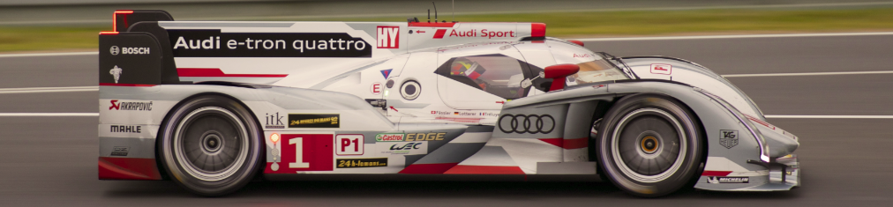
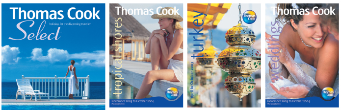
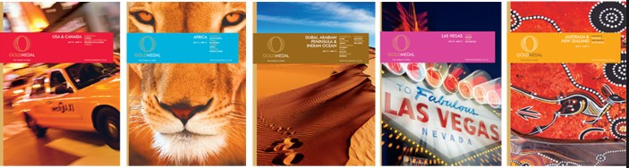

Creative. Engaged. Focused on excellence. Since 1985, we’ve been exceeding the expectations of Metro Detroit’s most demanding designers and art directors. How? With 30 years of deep digital know-how. And a desire to build your brand.
So are we. In fact, we’re downright compulsive. Text. Images. Photos. Fine lines. Blue skies. Smooth complexions. We’ll sweat the details so you don’t have to. At Heath, making you look good is job one. And two. And three.
What’s the best printer out there? Revolutionary technology drives our Xerox® iGen® 150 for jaw-dropping quality never before possible with a digital solution. Innovations like built-in intelligence and expanded sheet size (14” x 26”) combine optimal sharpness with incredible flexibility. And you get all the credit.
You can see it in every job – the pride of an artisan. And no wonder. Each expert benefits from continuous training to master new techniques. With the most advanced Xerox technology at their fingertips, they are empowered to create excellence for you. All with fast turns and exceptional attention to detail.
Tight deadline? No worries. Complex folding? Piece of cake. Need gloss varnish or soft touch finish? Cool beans. We make complex processes simple. With effortless turn-key solutions that meet our customer’s needs. Without compromise. Or whining. Efficiency on our end makes life easier on your end.
We have three speeds: Quick, brisk, and insanely fast. You could say, our specialty is nailing orders that were needed “yesterday.” Our team moves in synch, getting your message out the door and into the customer’s hands sooner. The pros rely on Heath for rush jobs thatcan’t look rush. Bring donuts for even faster service.
Customer service is our fastball. And we prove it every day. Because we’re not satisfied until you are. When you call, you’ll talk to a real, live expert. As we follow your job from start to finish, we’re always available to answer questions. Our personal touch builds strong partnerships and assures total quality along the way.
In a multichannel world, tangible branding and hand-held literature are still indispensable to your success. We’re your strategic partner to capture the eye and the loyalty of your customer. Heath brings digital printing, direct mail, and marketing flair to ignite results. And create impact.
Got mail? A well-executed direct mail campaign is still a powerful performer. Heath offers integrated solutions, from variable data personalization to targeted lists. Plus, our automation software guarantees the lowest postage rates. All done “turn-key” at our facility, which means no more chasing down multiple vendors.
You need high-impact marketing tools. Tools that grab attention and generate results. Our variable dataprinting lets you create individually-customized pieces for maximum response rates. Personalized mailers blow traditional direct mail away. Let us turn any marketing piece into a one-on-one message.
Digital printing is the game changer. We offer impeccable work on demand and on budget. Plus four cool bonuses:
No plates to create and no “make ready” time. Your job can be on press in minutes instead of hours or days with traditional printing.
Many designers prefer digital over offset printing. Colors are brighter and crisper because digital ink doesn’t diffuse into the paper fibers.
We’re the king of low quantity perfection. And we do it without the costly mechanical set-up needed with conventional offset.
A digital press “writes” an electronic image for every image. That means each copy can be personalized with unique text or images.
Churches, charities, schools. We’re proud to help dozens of groups doing great work on tight budgets. We keep costs down and results up with weekly programs, capital campaigns, and curriculums. Our full-service letter shop handles your self-mailers, appeal letters, statements and more. Keep your marketing materials and literature racks as fresh and timeless as your message.
Heath Press offers wholesale digital printing to our trade resellers. If you are an agency designer or print broker looking for enhanced capabilities and shorter lead times, let us make your project a rip-roaring success.
Ready? The versatile our Xerox® iGen® 150 prints on coated and uncoated stocks, cover weights, vinyl, even cling materials. Plus, our finishing team does coil, wire, and perfect binding. Not to mention laminating and mounting. Our large format printer is perfect for pull-up signs, presentation graphics, and trade show displays. From pocket folders to banners, we’re your brand-building partner.
Request a free consultation on any project, big or small. Let us present samples. Get a feel for the passion that drives our quality. Call 238.288.5580 or click here.
Let us create a good first and last(ing) impression.